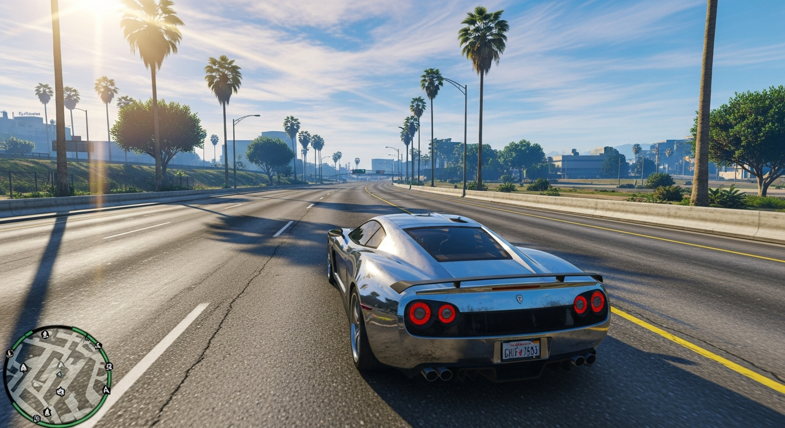
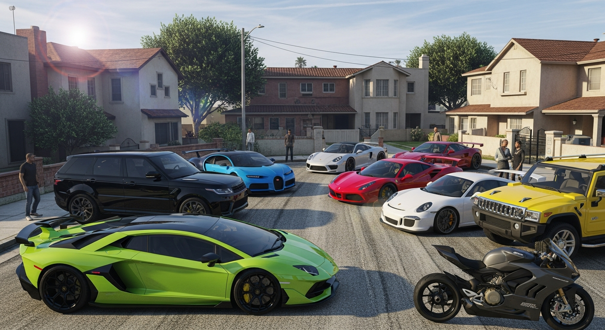
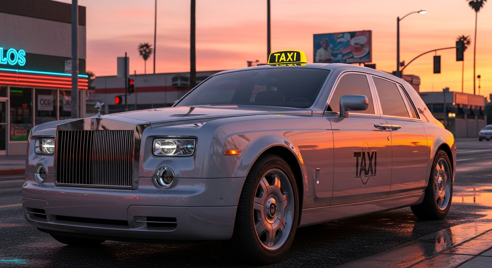
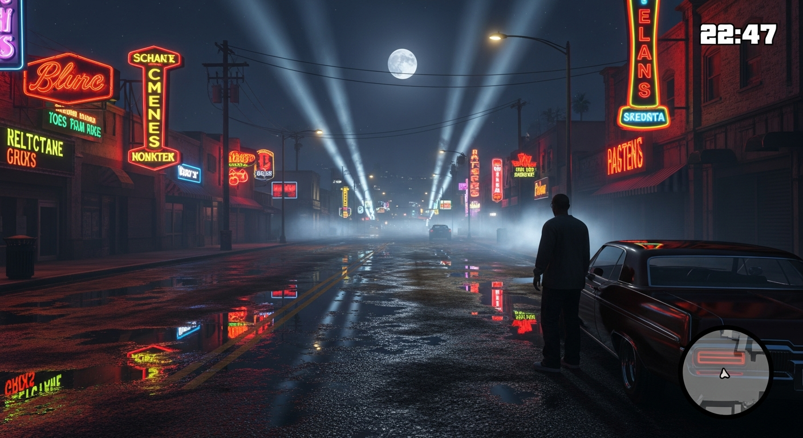
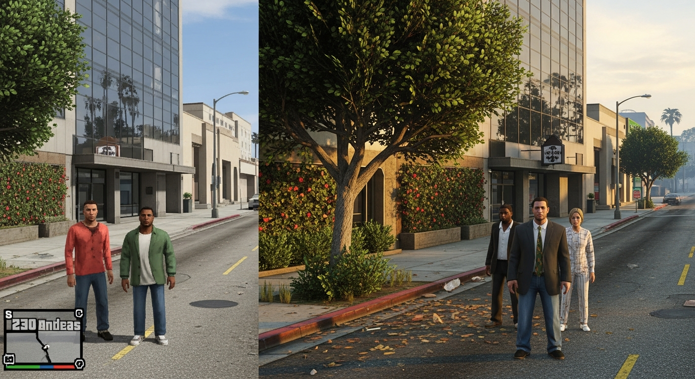
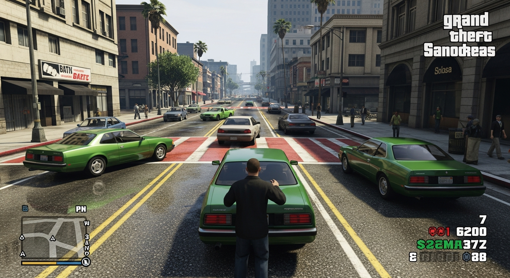

Enhanced Modded Edition - Remastered Graphics, New Cars & Ultimate Performance
Experience the legendary San Andreas like never before. Download our heavily-modded version featuring stunning HD graphics, exclusive vehicle packs including the iconic Rolls Royce taxi mod, and full optimization for low-end PCs.
Revolutionary upgrades that transform your gaming experience
High-resolution textures, enhanced lighting effects, and realistic shadows bring San Andreas to life with stunning visual fidelity.
Massive collection of detailed car mods including sports cars, SUVs, bikes, and luxury vehicles with realistic handling.
Experience luxury with our exclusive Rolls Royce taxi replacement - cruise the streets of San Andreas in style and elegance.
Carefully optimized to run smoothly on budget systems. Enjoy enhanced visuals without sacrificing performance.
60+ FPS gameplay with reduced stuttering and improved frame pacing for a buttery-smooth gaming experience.
Realistic day/night cycles, volumetric lighting, and improved reflections create an immersive atmosphere.
Witness the transformation - Before & After






See more screenshots in our full gallery
View Full GalleryWatch how to download and install GTA San Andreas modded edition
Complete tutorial for downloading and installing on Windows 10/11. Includes Google Drive, MEGA, and MediaFire download links.
Step-by-step guide for installing GTA SA Mod APK on Android devices. Works on all Android versions 5.0+.
Learn how to customize your GTA San Andreas with additional mods, texture packs, and graphics improvements.
GTA San Andreas download available for PC, Android, and all platforms
Get GTA San Andreas for Windows 10, Windows 11, Windows 8, and Windows 7. Full modded version with HD graphics and new vehicles. Optimized for both high-end gaming PCs and low-end budget computers.
Download GTA San Andreas Mod APK for Android phones and tablets. Includes unlimited money, all missions unlocked, HD graphics, and vehicle mods. Works on Android 5.0 Lollipop and above.
GTA San Andreas free download with no hidden costs, subscriptions, or in-app purchases. Get the complete game with all mods installed.
All files scanned with multiple antivirus programs. 100% safe download with no malware, viruses, or adware. Trusted by 500K+ users.
Multiple mirrors including Google Drive, MEGA, and MediaFire. Choose the fastest server near you for quick downloads.
Installation guides, video tutorials, and troubleshooting help. Our community is here to assist you every step of the way.
Get the ultimate GTA San Andreas modded experience
4.2 GB
100% Safe
ZIP Archive
Windows
Choose between PC (Windows 10/11/7/8) or Android APK download. Multiple mirrors available for fastest speeds.
Click on any download link above to get the modded GTA San Andreas package. Choose the mirror that works best for you.
Use WinRAR or 7-Zip to extract the downloaded ZIP file to your desired location. We recommend creating a dedicated folder like "C:\Games\GTA SA Modded".
Navigate to the extracted folder and run "gta_sa.exe" as administrator. All mods are pre-installed and ready to play!
For low-end PCs, adjust graphics settings in-game. Start with medium settings and increase gradually based on your performance.
Yes, absolutely! Our modded version is thoroughly scanned for viruses and malware. We only use trusted sources and verify all files before distribution.
Yes! This modded version is specifically optimized for low-end systems. You can enjoy enhanced graphics while maintaining smooth performance on budget PCs.
No, this is a complete standalone package. All mods and enhancements are pre-installed. Simply download, extract, and play!
Our exclusive Rolls Royce taxi mod replaces the default taxi with a luxury Rolls Royce model, complete with detailed interior and realistic handling physics.
Yes, you can add additional mods if you wish. However, we recommend backing up the game folder first to prevent conflicts.
This version focuses on single-player experience with enhanced visuals. For multiplayer, you would need to install SA-MP or MTA separately.